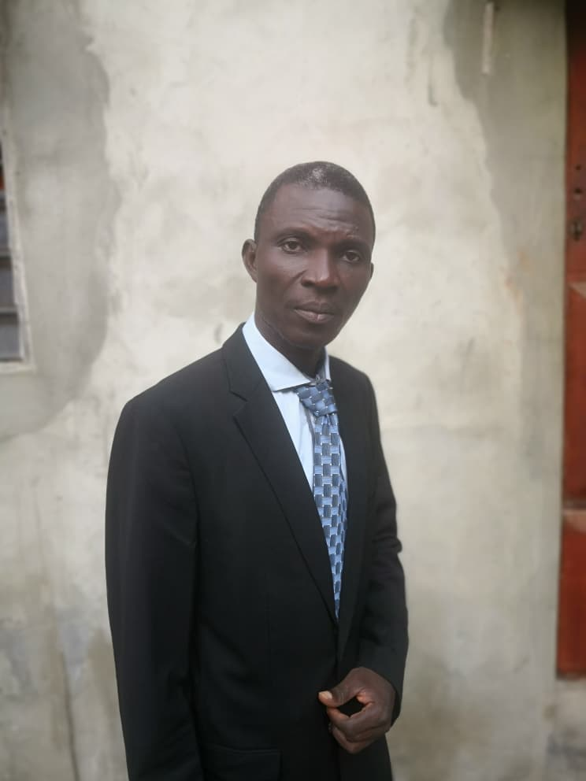
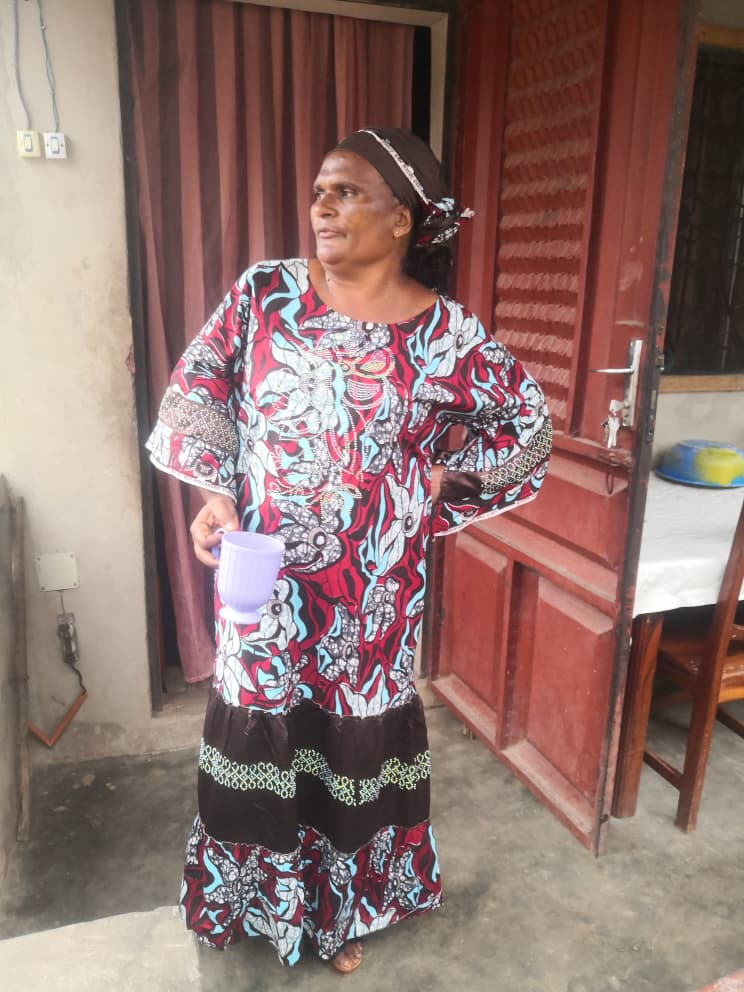

👤
Prophète Ganiou Luc YESSOUFOU
Porteur de la Vision
Fondateur et visionnaire de la mission
Notre Histoire
Une mission née d'une vision divine, ancrée dans la Parole, tournée vers les âmes oubliées du Bénin et du monde.
Notre Identité
La Mission Apostolique de la Parole Restaurée (MAPR) est une organisation évangélique née au cœur du Bénin, dans la commune de Bonou (Ouémé).
Elle n'est pas une simple église, mais un réseau d'implantation d'églises, d'intercession nationale et d'action sociale, œuvrant dans l'unité du corps de Christ et la collaboration ministérielle.
Notre mission s'inscrit dans la grande recommandation du Seigneur Jésus-Christ, avec une attention particulière pour les zones non atteintes et les familles oubliées.

Prophète Ganiou Luc Yessoufou
Porteur de la Vision
Le Fondateur
Porteur de la Vision MAPR
« Le système de la gouvernance dans le monde s'inspire en grande partie de la Bible pour pouvoir conduire les hommes sur terre. Mais les enfants du Royaume ignorent les réalités qui devraient faire sa paix. » — Prophète Ganiou Luc Yessoufou
Homme de Dieu engagé, le Prophète Ganiou Luc YESSOUFOU a reçu la vision de la MAPR comme une réponse à l'appel de Christ : « Allez, faites de toutes les nations des disciples ».
Depuis Bonou, dans le département de l'Ouémé, il coordonne un vaste réseau d'intercesseurs, d'évangélistes et de partenaires sociaux, avec une vision claire : restaurer la Parole là où elle a été oubliée, et transformer concrètement la vie des communautés.
Vie de prière
Enseignement biblique
Unité ministérielle
Notre Équipe
Une équipe engagée, complémentaire et organisée, au service de la vision et des communautés.
Porteur de la Vision
Fondateur et visionnaire de la mission
Secrétaire Général
Administration et coordination
Secrétaire Générale Adjointe
Soutien administratif et spirituel

Trésorière Générale & Responsable Volet Social
Socio-Anthropologue · 30+ ans d'expérience
Voir son parcours →Directeur de la MAPR
Direction opérationnelle
Coordonnateur National des Ouvriers
Pilotage de la chaîne d'intercession
Notre Parcours
De la vision à la reconnaissance officielle, chaque étape a été un pas de foi.
Le Prophète Ganiou Luc Yessoufou reçoit la vision de la MAPR à Bonou. Premiers rassemblements d'intercesseurs et de leaders d'églises.
Mise en place du système OOSS (Ouvriers, Solidarité, Oubliés, Sentinelles) — un modèle organisationnel unique au service de la mission.
Déploiement de la chaîne d'intercession dans les 12 départements du Bénin. Création des coordinations départementales.
Collaboration officielle avec GloBeServe, Oasis Ministries World, WHOP Benin Globe, Global Business Round Table et BCU.
Obtention de l'attestation de la Direction des Affaires Intérieures et des Cultes (DAIC) du Ministère de l'Intérieur — Référence : PS01509-260428-gMOqvb.
Concrétisation des projets sociaux d'envergure : protection de l'enfance, santé communautaire, éducation confessionnelle.
Reconnaissance Officielle
La MAPR est officiellement enregistrée auprès de la Direction des Affaires Intérieures et des Cultes (DAIC) du Ministère de l'Intérieur et de la Sécurité Publique de la République du Bénin.
Que vous soyez leader d'église, partenaire potentiel ou simple croyant touché par notre vision, nous serions honorés de vous rencontrer.